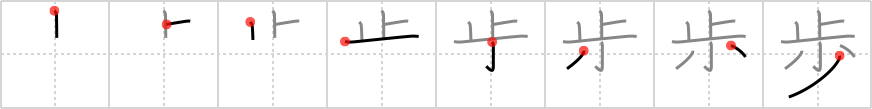

歩
← →
walk

Reading:
On-Yomi: ホ、ブ、フ — Kun-Yomi: ある.く、あゆ.む
Heisig story:
Footprints that follow one another a few at a time indicate walking.
Koohii stories:
1) [scottamus] 24-1-2006(188): When walking your pet, you must stop a few times along the way when nature calls.
2) [Delina] 28-2-2008(79): When you learn to walk, you take your steps a few at a time. Picture a clumsy but happy toddler who falls every few steps but keeps getting up to try again.
3) [jabberwockychortles] 4-3-2009(27): When you take a walk you should stop a few times to smell the roses.
4) [drivers99] 1-5-2009(13): When you walk you leave a few footprints.. not as many as when you run.
5) [kaminix] 3-4-2008(6): To walk is to stop a little now and then while going somewhere. (not exactly true, but that made it stick for me!).